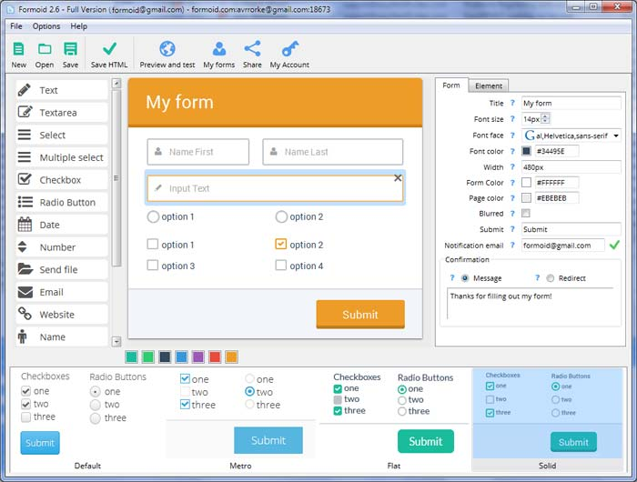

FormBuilder is a free desktop app that helps you easily create
html email form, css forms, web forms, html email form and more in a few seconds without writing a single line of code. Create great online forms in just a few clicks.
Web forms provide a great way to gather info from customers
Web pages were initially a compilation of text and images, but along with the technological advancement and the discovery of new technologies, they started including a lot of new things, from animations to videos, forms and others. These not only help improve the overall experience that the user has on a website, but also make your page a lot more appealing and informative as well.
The use of web forms has increased immensely in the last decade, and now all major websites, as well as the smaller ones use them to collect data or feedback from their customers. Web forms provide developers with a great way to gather info from their customers and then send it to the server. These forms tend to look a lot like real life paper forms, since they tend to include the same type of boxes and fields.
But why would anyone use a web form on his webpage? The answer to this is simple. Instead of asking users to write their data in a file and then send it to you via mail, the web forms make it a lot easier to manage and collect this information without requiring any type of attachments. Web forms are usually embedded into the website and just gather all the info you need, then transfer it to the target server. This way you can easily gather info from thousands of customers without even having to sit in front of the computer.

You can use online web forms in multiple ways. First of all, you can embed them on your website, without involving any unnecessary file attachments. Also, you can insert your form in an e-mail newsletter, or point your customers/readers to an URL that hosts the online web form.
The advantages of using an online web form are tremendous, since it allows you to provide instant responses to your readers based on the data/feedback they give you, while also exporting your data a lot easier and managing all submissions in simple database that can be accessed at any time.
What’s more, once you have the data you need, you can easily export it manually to Excel or other format, then place it in the cloud or anywhere you need for faster access.
Web forms are a great solution for gathering user data because they are secure, fast and portable. What’s more, they will always integrate seamlessly with your website, making it feel complete.
There are numerous solutions that allow you to create beautiful web forms, but none is more reliable and easy to use than http://formoid.com/. Formoid is a wonderful application that allows you to create beautiful web forms even if you don’t have any coding knowledge. It uses a drag and drop graphical user interface and it comes integrated with numerous themes that will appeal to anyone. Formoid is an application available for both Mac OS X and Windows platforms, and it’s surely one of the best ways to create forms fast and in a reliable manner.